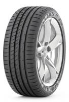

Tyre Review Magazaine
Good Year Eagle F1 Asymmetric2
The Goodyear Eagle F1 Asymmetric 2 is a Max Performance Summer tyre designed to be fitted to Passenger Cars.
This tyre replaced the Goodyear Eagle F1 Asymmetric
This tyre has been replaced by the Goodyear Eagle F1 Asymmetric 3
Show all
Goodyear tyres
Passenger Car Summer Max Performance tyres
Tyre review data from 313 tyre reviews averaging 87% over 2,723,823 miles driven.
Reports
The Goodyear Eagle F1 Asymmetric 2 is here!

Copyright statement. This page is honestly snatched. Original can be found over the link below.
All rights belongs to somebody, whom I do not know.
Anyway thanks that good man for the materials used for my education
original review